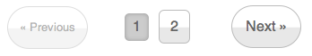
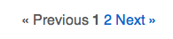
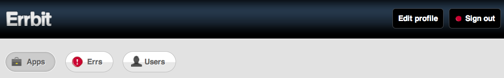
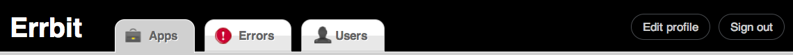
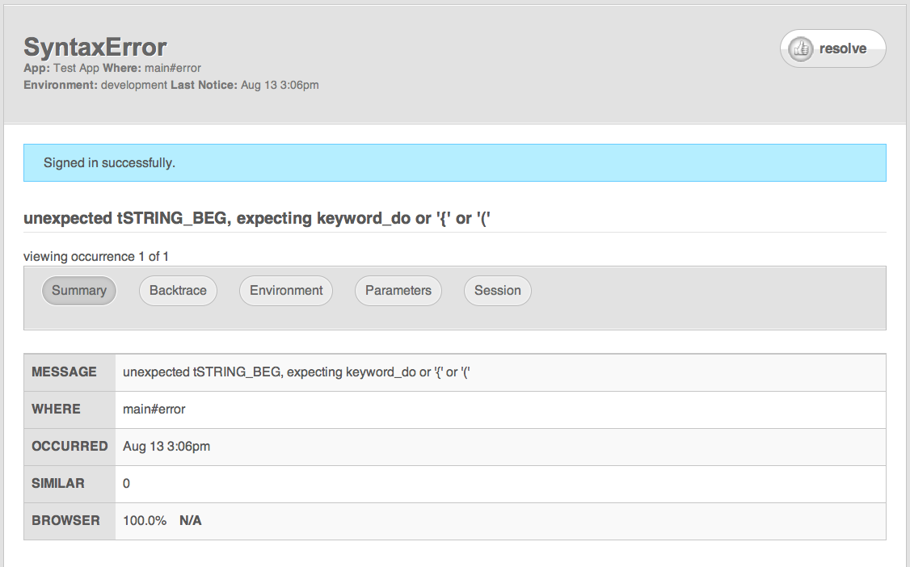
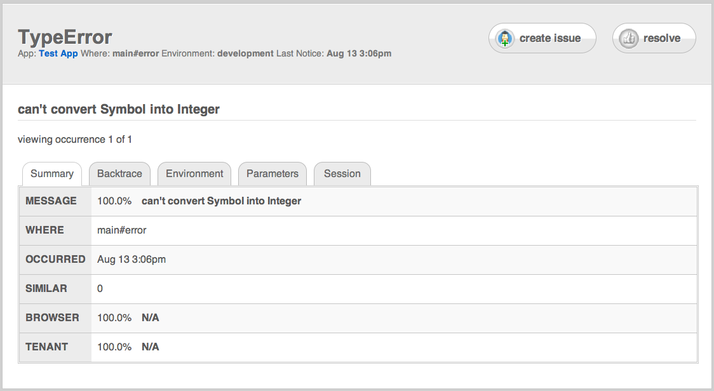
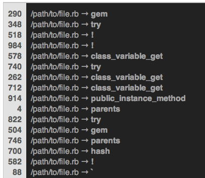
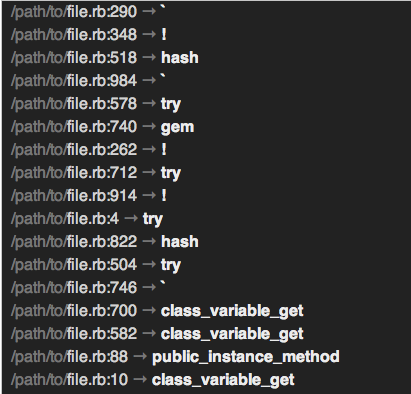

The open source error catcher that's Hoptoad API compliant
This is a fork
This is a fork of
github.com/errbit/errbit.
Changes
The major changes I've made on
boblail/errbit are:
- Added the ability to apply bulk actions to selected errs
- Added the ability to merge errs
- Tightened up the user interface
- Made column headers sortable
- Enabled Errbit to receive notifications from the JavaScript notifier
- Worked on improving performance through caching values onto Problem
- Notice summary screens show breakdowns for certain values
- Refactored notice API so that it is (a) easier to test and (b) possible to re-report all notices
UI Design Changes
Pagination (errbit/errbit):

Pagination (boblail/errbit):

Banner (errbit/errbit):

Banner (boblail/errbit):

Notice View (errbit/errbit):

Notice View (boblail/errbit):

Backtrace (errbit/errbit):

Backtrace (boblail/errbit):

Download
You can download this project in either
zip or
tar formats.
You can also clone the project with Git
by running:
$ git clone git://github.com/boblail/errbit